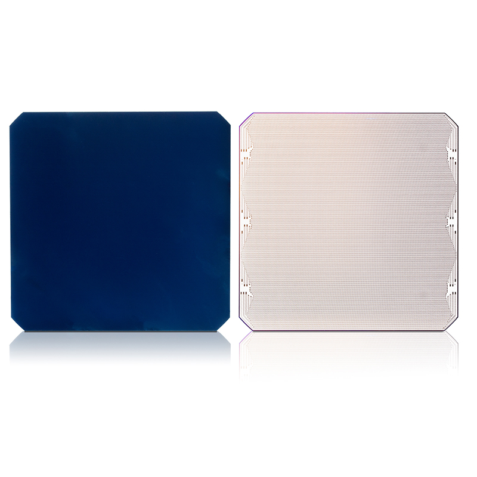
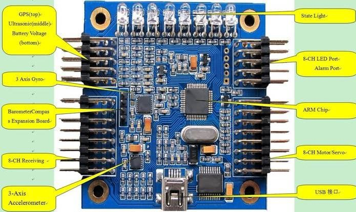
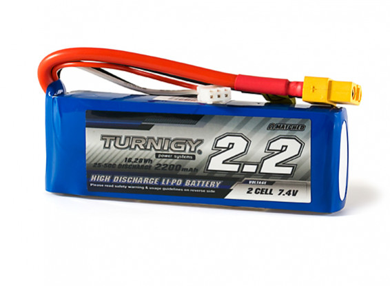

Monocrystalline cells are very light and are still efficient enough for my project. The problem with them is that they are very fragile and can be damaged if handled poorly but at the same time even if they also require to be purchased online, they can be ordered in smaller quantities. Monocrystalline cells are also space efficient and so suits this project very well. Sunpower Maxeon C60 Solar Cells are the latest and the best monocrystalline cells right now. Sunpower solar cells power contact are all at the back of the cell hence leaving the face of the cell plain. The benefit of that is not only it will produce more output power at relatively small size but will also prevent the cell form shattering due to the copper backing. So this is why I have decided to use them in my project. My solar panel has 12 solar cells connected in series, inorder to achieve hiher voltage of around 7 volts.
The main function of a flight controller is to maintain a proper motor RPM in reply to the input sent by the pilot. When the pilot wants to move the quadcopter forward, the command is sent to the flight controller and then the flight controller directs the motors RPM accordingly. The flight controller is basically just a small circuit board which is the nerve center of a drone. Flight controllers manipulate the motors RPM to gain required outcome and so they had to be programmed correctly with the transmitter and motors. So I thought that it was better to use the same flight controller that I used on the on my previous drone as I am already using its motors. The picture below is the flight controller that I will use. The flight controller here is very basic one with 6-axis Gyro. Though this flight controller also has optional camera control if camera is added but that is not needed in this project for now.
For my light weight solar quadcopter I am using a 2s LiPo battery with 7.4 volts and 1500mAh. This 2s battery is enough to power my small motors and this will also be weight efficient as other batteries like 3s batteries are bigger and heavier but they can provide more power. Charging 2s battery using solar panel will take less time compared to charging 3s battery and more solar cells might be needed to be added which will again increase the overall weight thus might surpass the max allowed weight for lift.
